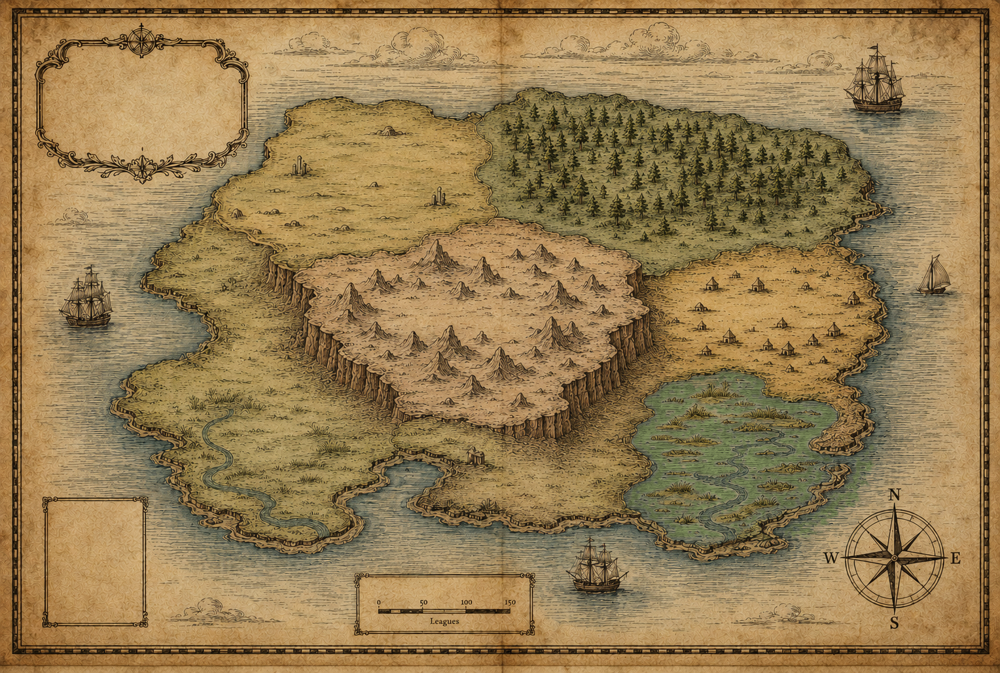

A curated map of organisations working on the risks advanced AI poses to sentient beings: AI's effects on animals, and the wellbeing and moral status of digital minds.

The map carries two dimensions, not one.
Why a map rather than a list? The field is small and fast-moving, and it is easier to hold as terrain than as rows: the regions give a newcomer a mental model of what kinds of work exist, and hovering a pin shows how the organisations connect.
Every organisation here works on the risks advanced AI poses to sentient beings, through research, advocacy, tools, funding, or field-building. That means one of two things: reducing the risks transformative AI poses to animals, or safeguarding the moral status and wellbeing of digital minds (the AI systems themselves). "Helps animals" on this map means work on AI risk to animals specifically, not animal welfare in general. Orgs working on animal welfare unrelated to AI, or AI safety unrelated to sentience, sit just outside the scope. The bar is strict on purpose.
Curated by Sentient Futures and CaML. The list is a snapshot. Emerging orgs are added as they meet the bar.
Know an org that should be here? Send us a note with the name, website, and a sentence on what they do.
Email a submission